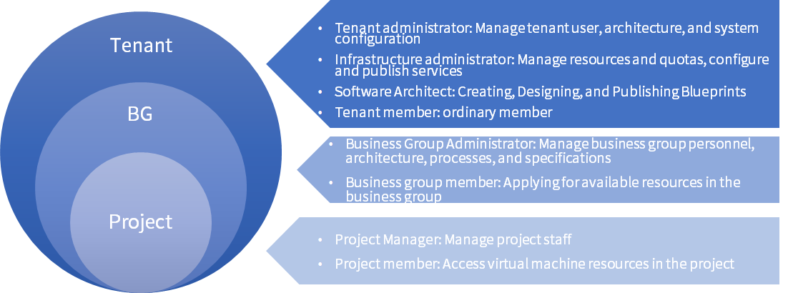

Roles
SmartCMP Hybrid Cloud Application Management Platform supports permission settings for multiple roles. The system has basic roles including:
Maximum privilege: system administrator
Tenant level: tenant administrator, software architect, infrastructure administrator, and tenant member
Business group level: business group administrators and business group members
Project level: project manager and project members
The logical relationship between roles as shown:

System administrators and tenant administrators can add, delete, and edit role permissions on the “Organization” – “Roles” page. After the role management is completed, the system administrator can manage the users in the "Organization " - "Users" page and assign the corresponding roles to the users as needed.
Click "Organization" - "Roles" in the left menu bar. The role list interface displays information about all roles of the current tenant, and displays the role name, role range, description, and so on. You can add, edit, delete roles, and manage permissions.
1. Create a Custom Role
In the left menu bar, click "Organization" - "Roles" and click "Add" to enter the Create Role interface. Enter the role name, description information, select the corresponding role permission range, and assign different permissions to the corresponding entity object. Click "Save" to generate a new role, click "Back" to abandon the creation of the role.
The scope of the role's permissions supports the tenant level.
「Note」If a role has only read access to an entity object, then it can't see the corresponding menu item on the left menu bar.
2. Edit a Custom Role
In the role list interface, select a custom role and click Edit on the list to open the Edit Custom Roles interface.
The default role of the system cannot be edited. The custom character can be edited. Click “Save” after editing. Click “Back” and no changes will be made.
3. Delete a Custom Role
In the role list interface, select a custom role, click "Delete" on the list, a prompt window will pop up, click "Yes" to delete the custom role.
The system default role cannot be deleted.
「Note」If the role is still associated with another user, deletion is not allowed.